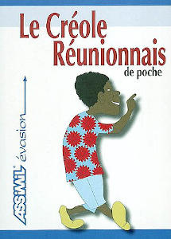

Le nom Créole peut aussi bien désigner une personne qu'une langue. En général les personnes désignées par ce sobriquet parlent aussi la langue du même nom. Cela pourrait faciliter les choses...
À l'origine, au XVIIe siècle, ce mot vient du portugais crioulo qui voulait dire « serviteur nourri dans la maison » et désignait ces esclaves métis étaant serviteurs dans les maisons au Brésil. Le terme a ensuite évolué pour désigner différentes personnes en rapport avec les migrations coloniales aux Amériques et dans les caraïbes. En France, Créole pouvait désigner une personne européenne, métis ou non, née dans les colonies ; par exemple, l'impératrice Joséphine était créole. À Maurice par contre le terme était plus utilisé pour désigner les noirs
Créole veut dire mélange et donc le créole est un métis de sang ou de culture. Il a cette particularité d'être un mélange de races si prolixe qu'on pourrait dire que c'est une race à part entière. Il y a des Créoles aux Antilles, aux Caraïbes, en Amérique du sud. aux Mascareignes, aux Seychelles, en Indonésie, aux États-Unis… Chaque créole de chaque pays est spécifique à ce pays tout comme leur langues. A part se mélange, il n'y a pas de spécificité créole. C'est pourquoi pour les langues créoles, il est plus juste de parler de catégorie ou de famille de langues car chaque langue créole a ses origines, son histoire et sa grammaire propre.
Ainsi les Réunionnais parlent réunionnais, les Haïtiens parlent haïtiens et même si les deux créoles ont des origines communes comme le français, les deux langues ont évolué différement et répondent à des règles différentes.
La plupart des langues créoles ont pour base une langue européenne, principalement le français, l'anglais, l'espagnol mais il existe aussi des créoles ayant pour base l'arabe, le malais ou certaines langues africaines. Partout dans le monde, les gens ont voyagé et ont eu besoin de communiquer.
En ce qui concerne le réunionnais (la langue), les avis sont partagés
pour ce qui concerne le métissage. Certains parlent d'un vieux français
transformé et simplifié mais sans apport d'autres
langues. Cette théorie ancienne et largement réfutée était surtout retenue par une
société qui voulait signifier la préhéminence de la culture française.
Aujourd'hui, on explique que le réunionnais est un mélange de français qui est sa base, de dialectes régionnaux français comme le normand mais aissi de langues africaines ou indiennes comme le malgache et le tamoul, bref, que le réunionnais est une langue créole !
La langue véhiculaire de l'île de la Réunion reste le français. Le créole réunionnais, né de la tradition orale a évolué comme langue maternelle au cours des générations et répond aujourd'hui à des régles de grammaires et d'orthographe bien définies mais reste principalement une langue vernaculaire et domestique. Il aime bien pointer le bout de son nez dans les arts et dans les nouvelles

Editeur Assimil
Collection Langue De Poche
Format 11cm x 15cm
{% fnac "creole", "https://livre.fnac.com/a2989799/Gillette-Staudacher-Valliamee-Le-creole-reunionnais-de-poche" %}